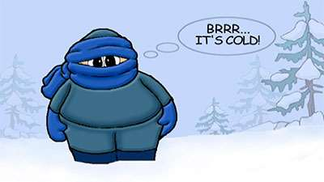

One Late Cold Night, We Heard
One late winter night, we heard the cry of an old lady, from the nearby house. She was alone, living with her husband, who was not well, and confined to bed. Sensing their pitiable condition, the neighbours used to help them, by turns. That night, when they were alone, some burglars had entered their house from the backside, after jumping over the courtyard wall. They over powered both of them and tied them to cots. The lady was somehow able to free herself from the bondage, and she came out into the courtyard, from where she made her attempt to cry for help. Four of us reached there, three gents and one lady. We freed her husband from the rope, which was tightly tied, that it had made marks on his skin, causing bruises. Two of us went to the Police Station. The culprits had taken to their heels, when the lady raised the alarm. The police came and made a thorough search of the house. they found two boxes in the adjacent park. Luckily the burglars coould not open them in the hurry. All the precious articles in the almirahs were also safe. Thus, the old couple were saved from their valuables being stolen by burglars. Next day they changed the house and shifted to their son's residence, in the nearby colony. The old lady was very thankful to her neighbours, who came to help them, in their hour of need.